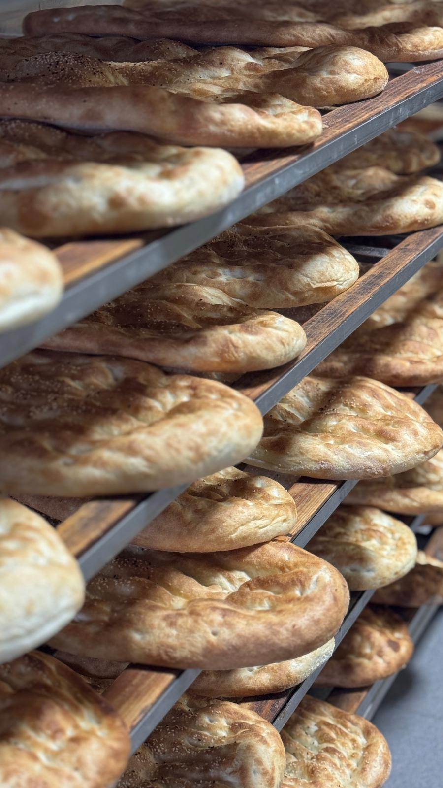
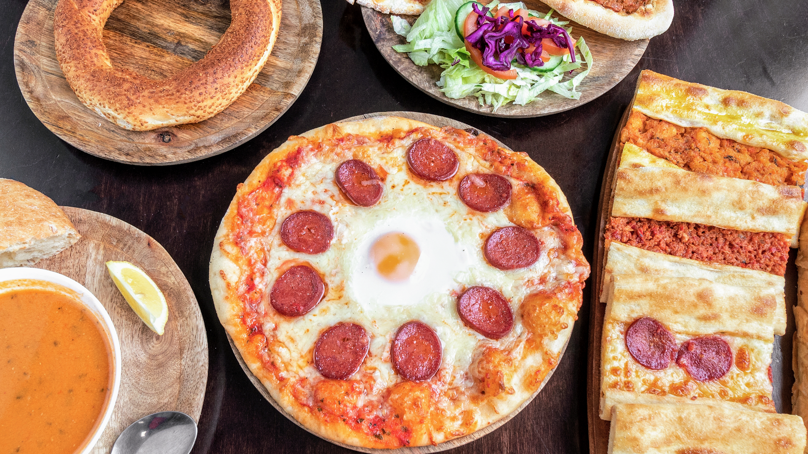
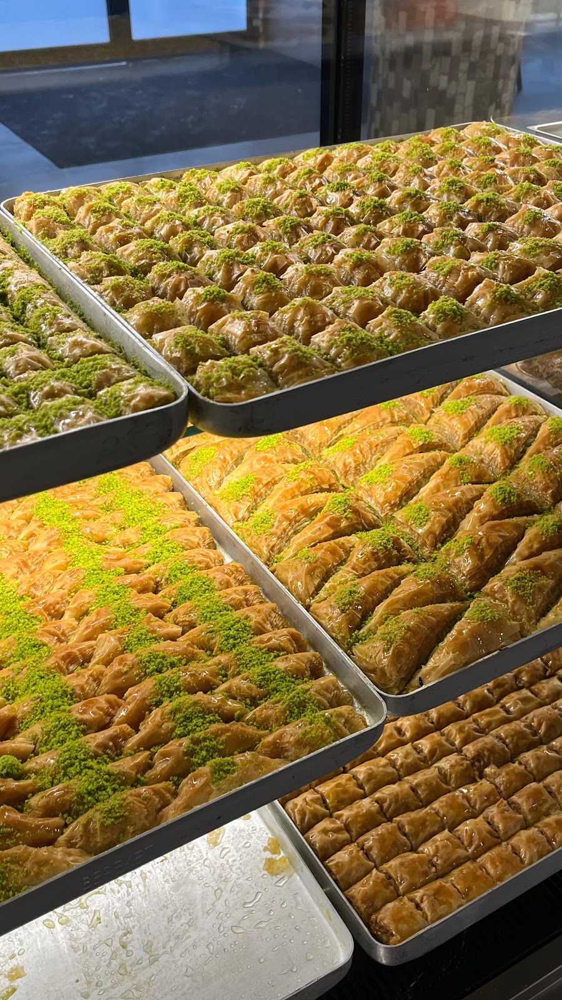
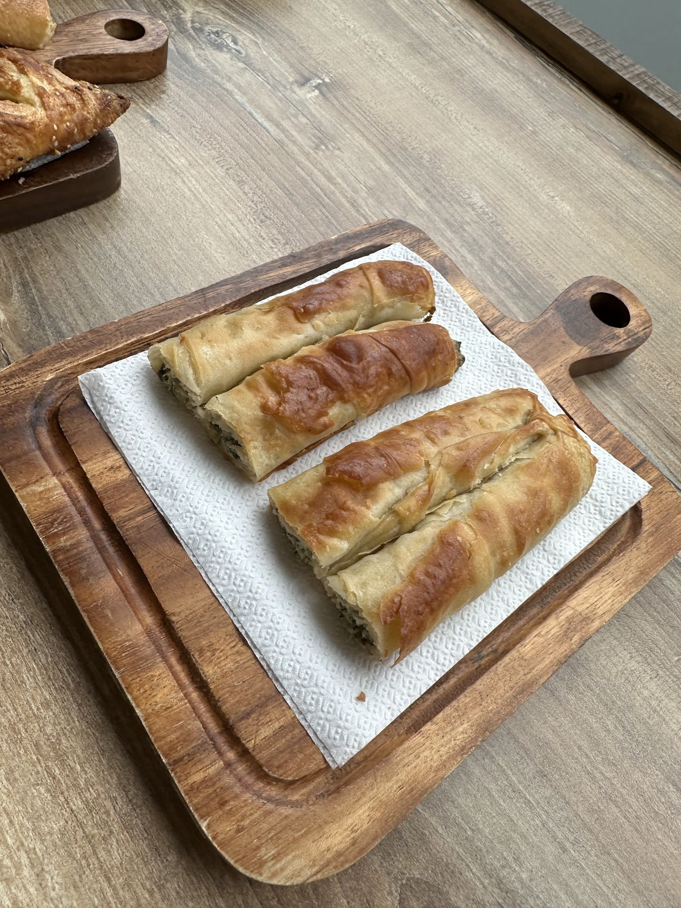
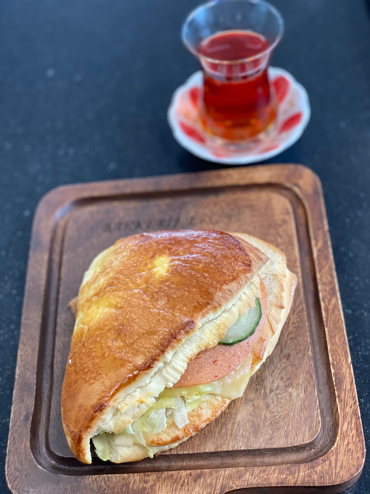
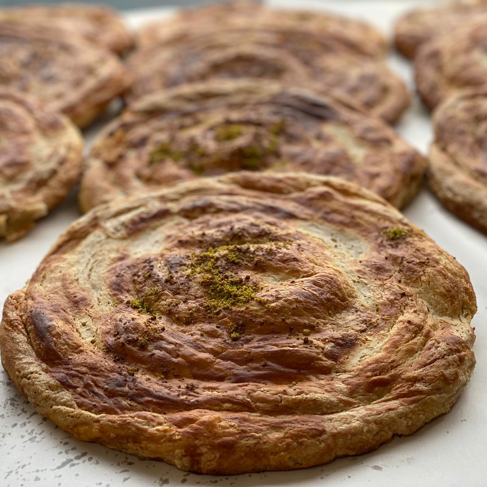
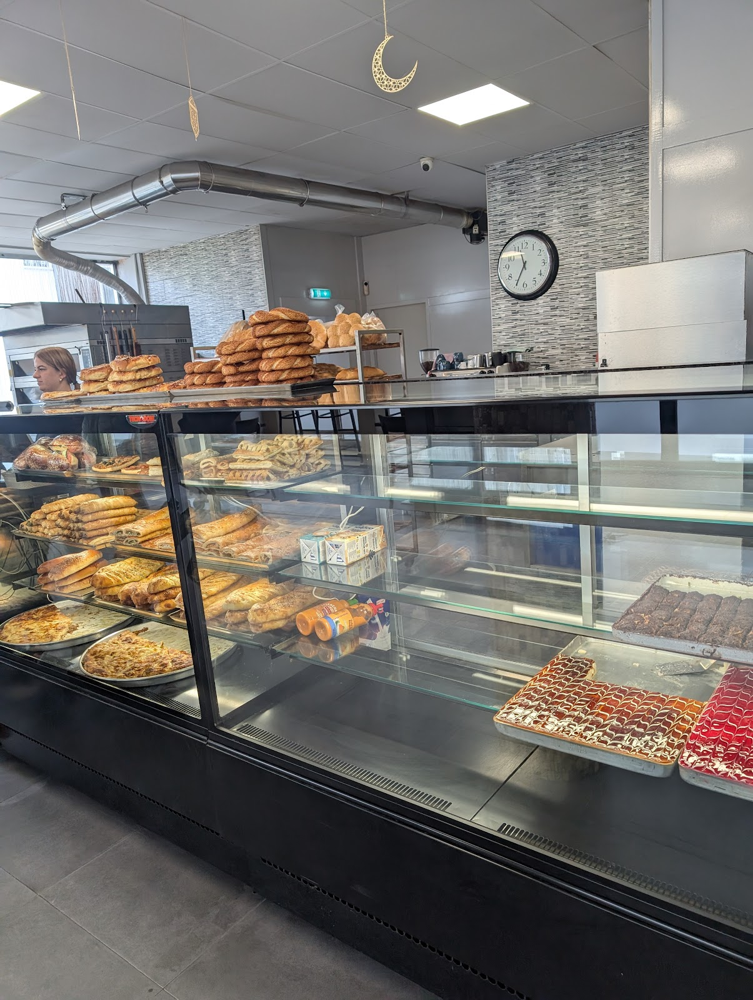

Turkse bakkerij aan de Steenstraat, Arnhem
Elke ochtend vers uit onze oven
Pide, lavaş, börek en baklava, gebakken volgens de Turkse traditie. Onze bakkers beginnen vroeg, zodat alles warm en vers klaarligt als u binnenkomt.
Maandag tot en met zaterdag open van 08:00 tot 19:00. Zondag gesloten.

Wat er vandaag in de vitrine ligt
Brood, börek, snacks, baklava, koud gebak, pizza en pide, gözleme en iets te drinken erbij. U neemt het mee of eet het bij ons op.





Ons brood
Negentien soorten, elke dag vers gebakken. Van dun lavaş voor een wrap tot een grote pide voor het hele gezin.
Grote bestelling of iets apart laten leggen? Bel even, dan zorgen wij dat het klaarligt.
Bel 026 443 56 15- Lavaş
- Dun en zacht Turks platbrood, perfect als wrap of bij een maaltijd.
- Lavaş bolletje
- Klein zacht lavaş bolletje, ideaal als broodje of bijgerecht.
- Lavaş Paşa
- Groter lavaş brood met een zachte, luchtige structuur.
- Pide rond
- Rond Turks brood met sesamzaad, zacht van binnen en knapperig van buiten.
- Pide ovaal
- Ovaal Turks brood, luchtig en zacht. Een dagelijkse klassieker.
- Pide groot groot formaat
- Groot pidebrood voor het hele gezin of bij een catering.
- Pide bol
- Volumineus pidebrood met een volle, zachte binnenkant.
- Pide bol bruin volkoren
- Bruin pidebrood, voedzaam en vol smaak.
- Pide puntje
- Klein puntig pidebroodje, knapperig en luchtig.
- Pide punt bruin volkoren
- Bruin puntig pidebroodje, voedzaam en smaakvol.
- Balık
- Visbroodje in traditionele stijl, zacht en luchtig.
- Balık groot groot formaat
- Groot visbroodje voor een stevige maaltijd.
- Papatya
- Madeliefjesbrood met een zachte, luchtige structuur en een mooie vorm.
- Papatya bruin volkoren
- Bruin madeliefjesbrood, voedzaam en vol smaak.
- Somun klassiek
- Klassiek Turks wit brood met knapperige korst en zachte binnenkant.
- Mısır ekmeği speciaal
- Turks maïsbrood met een eigen smaak en goudgele kleur.
- Mısır ekmeği bruin volkoren
- Bruin maïsbrood, voedzaam en vol smaak.
- Sandwich bol
- Zacht, rond broodje voor een lekker belegd broodje.
- Sandwich punt
- Puntig broodje met knapperige buitenkant en zachte binnenkant.
Turkse bakkunst, gewoon in de Steenstraat
Bakkerij Erciyes staat voor eerlijk, dagvers brood en gebak. Ons hart ligt in de Turkse baktraditie: handwerk en recepten die van generatie op generatie zijn doorgegeven.
Onze bakkers beginnen vroeg in de ochtend. Als u binnenkomt, liggen de pide, de simit en de börek al warm in de vitrine. Of u nu één broodje komt halen of een hele bestelling: de kwaliteit is dezelfde.

Ook uw vaste bakker voor restaurant, catering of bedrijf
We leveren aan bedrijven, horeca en cateraars in de regio. Bent u restauranthouder of cateraar, of heeft uw bedrijf dagvers brood en gebak nodig? Neem contact op voor een vrijblijvend gesprek.
- Dagvers
- Alles wordt elke dag vers gebakken en dezelfde dag geleverd of afgehaald.
- 20 of 200 broodjes
- Wij passen ons aan uw volume aan.
- Alles uit één hand
- Lahmacun, börek, gözleme, broodjes, soepen en zoetwaren.
- Vaste afspraken
- Levering op afgesproken tijden. We denken graag mee over wat u nodig heeft.
"Vriendelijk personeel en lekkere broodjes! Ook niet duur! Het is niet super gezellig zitten bij deze bakker. Maar de smaak van de broodjes maakt het weer helemaal goed!"
"Even tijd voor een lekker tussendoortje. Zoals iedere keer. Echt goed en lekker..."
Kom langs of bel even
Openingstijden
| Maandag | 08:00 tot 19:00 |
| Dinsdag | 08:00 tot 19:00 |
| Woensdag | 08:00 tot 19:00 |
| Donderdag | 08:00 tot 19:00 |
| Vrijdag | 08:00 tot 19:00 |
| Zaterdag | 08:00 tot 19:00 |
| Zondag | Gesloten |